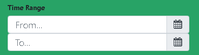
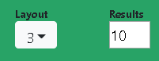

Hello! Need a quick tour? If so, let me help out!

Want to learn about the reasons behind this project? Go ahead and click the 'i' button on the top right.
If you want to get a share-link for the videos you found click the share button right beneath it!
If you want to get a share-link for the videos you found click the share button right beneath it!

We've collected a huge bundle of videos for you to search through. To search through it the first thing you need to know is that you can search for videos that were recorded in a specific slice of real life time.
The leftmost section in the row above has two slots. Click the calendar of the topmost one to set the start point of the date/time slice you want to see. Note that this start point can be when the video began in realtime or some point it simply covers.
The bottom slot allows you to set the endpoint of the date/time slice you want to see (leaving it black will have it default to the current real life time). Start time is a *mandatory* input.
The leftmost section in the row above has two slots. Click the calendar of the topmost one to set the start point of the date/time slice you want to see. Note that this start point can be when the video began in realtime or some point it simply covers.
The bottom slot allows you to set the endpoint of the date/time slice you want to see (leaving it black will have it default to the current real life time). Start time is a *mandatory* input.
We also allow you to search for videos that were shot in specific places, use the 'Location' dropdowns to narrow your search to certain locations.
Similarly if you only want to see videos shared by specific sources you can narrow your search that way as well with the 'Source' dropdown.
By default all locations and sources are selected and cosnidered when searching.
Similarly if you only want to see videos shared by specific sources you can narrow your search that way as well with the 'Source' dropdown.
By default all locations and sources are selected and cosnidered when searching.
Once you've narrowed your search as much as you'd like just click the search button!
Oh, but just be aware that once you do me and all my helpful advice will dissapear~
Oh, but just be aware that once you do me and all my helpful advice will dissapear~

Depending on your device or preferences you might want to have your video players displayed in different ways.
The Layout dropdown lets you choose the maximum column display at any given time. Additionally Results lets you set a limit (from 1-30) for the maximum number of videos returned from your search.
The Layout dropdown lets you choose the maximum column display at any given time. Additionally Results lets you set a limit (from 1-30) for the maximum number of videos returned from your search.
You can play, pause, fullscreen, etc. each video individually. However if you want to play ALL videos at the same time, or pause them ALL at the same time just use the play and pause buttons pictured here. Note that you probably only see one or the other, as they transition between eachother on click.
Also, an important note, the *first* time you click the play button after any given search all videos will automatically fast-forward to whatever the start point that you selected was in your search query.
Also, an important note, the *first* time you click the play button after any given search all videos will automatically fast-forward to whatever the start point that you selected was in your search query.
If you want to return to the home screen and see this tutorial again just click our logo!
Want to trim videos from your results? Hover over the middle-right of any video player and a bar with the button pictured will appear. Click it to remove the player. When you share video collections through the Share button mentioned earlier videos that you ignored will also be represented in the share url.